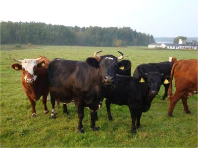

A calf life worth living

{kind=link}
The aim of this page is to understand and guide the good life of a calf and its mother, based on an understanding of what they would naturally do and prefer.
A good social life in good health - a goal for young animals
It is an important goal in organic farming to give all animals good living conditions, also the young animals - and maybe in particular the young ones: it is a precondition for becoming a good milking cow that the cow had a good life and good health as calf. In organic farming, naturalness is a goal for good animal welfare, and in the case of the calves it is important to understand its natural needs. Cows are social animals, and the social aspects should also be supported in the calf. It is not enough to only give it food or water, but also support it to be a herd animal.
In an organic farm, the social life of the cows and calves should have high priority.
| In an organic farm, the social life of the cows and calves should have high priority |
| (c) Mette Vaarst |
The natural birth of a calf
In a natural life, a cow will isolate herself from the flock, because she does not want to put all the cows, as well as the newborn calf in risk, in case any predators should come. She will find a peaceful place and give birth and hide the calf until it is ready to walk and run. We can learn from that always to give a cow a peaceful place to calf, and to leave her undisturbed but under observation all the time so that we can intervene if it is necessary. That is our duty when we have taken the animals into our households, and the calf is the future of the milking herd. Just after the birth, the cow will start licking the calf, and she will carry on with that for quite a long time, to stimulate it to breathe regularly and to get up. It keeps the calf clean and it stimulates the blood circulation. She will lick particularly long time around anus of the calf, to stimulate it to give the first manure, and thereby start the digestive system, and start the search for the colostrums; the first milk. This licking behavior also strengthens the bonds between the cow and the calf, and especially the mother will after just 5 minutes licking feel a strong bond to the calf. This will help the calf to survive, because the cow will take responsibility to care and feed it. The cow will use its voice to stimulate the calf to suckle and to get up. When the calf is standing, the cow will lick in particular all the places on its body, where it cannot reach itself. The calf will at this stage only use its voice if it is lost from its mother. Heifer calves are often active at an earlier stage, compared to bull calves.
In an organic farm, a cow should therefore calf in peace, and the cow and calf stay together for some time.
| In an organic farm, a cow should therefore calf in peace, and the cow and calf stay together for some time |
| (c) Mette Vaarst |
The first milk and the suckling behavior
Colostrum is the first milk produced by the cow after delivery. It is thick and yellow in color and contains antibodies among other elements, which provide the newborn calf immunity. Therefore, the colostrum will protect the calf, but these antibodies will only be able to be benefited from in the first 24 hours of the calf's life. This means that it really has to drink a big portion of milk at the first meal. The cow will continue to produce these antibodies during some days, and it is still beneficial for the calf - but the first hours and a big portion of colostrums is the most important. Some research results show that the calf's uptake of immune globulins is more efficient when the milk is taken directly from suckling the mother, rather than from a bucket.
| In an organic farm, it is also best for the calf to suckle its mother, but of course the farmer should keep an eye on whether it gets enough, and in warm weather, a calf also needs water. The cow needs a lot of water (30 - 80 litre depending on breed) to produce milk to the calf and the household. |
| (c) Mette Vaarst |
When the calf is just born, it instinctively knows that it should keep lying in the same space and only stand up, when the mother comes to it to feed it. That is important for the survival of the calf. This will go on as long as they are hiding somewhere together. The calf can drink up to 10-15 times during a 24-hr-day. During the first 4-5 days, the calf will spend much time drinking. Later, it gets much more used to it and can drink what it needs quite quickly, but still spend about an hour per day just drinking.
It will start by stimulating the udder, where it will move its head quite strongly up in the udder, and when the milk starts flowing they will concentrate on the milk stream. In an organic farm, it is also best for the calf to suckle its mother, but of course the farmer should keep an eye on whether it gets enough, and in warm weather, a calf also needs water. The cow needs a lot of water to produce milk to the calf and the household.
The normal suckling position
A calf and a cow, which feel safe together and have a strong bond between them, will stand parallel so that the calf stands with its body close to the mother. The natural way for the calf is also to keep its mouth on a higher level than the throat because this helps the natural uptake of the milk into the right stomach for milk - and not into the rumen, which can happen but is not the right way. This is important to notice because often we force the calf to drink in a different way with its head in a bucket. Small and taste means a lot for both, and the cow will constantly lick and smell the calf
| A calf and a cow, which feel safe together and have a strong bond between them, will stand parallel so that the calf stands with its body close to the mother. The natural way for the calf is also to keep its mouth on a higher level than the throat because this helps the natural uptake of the milk into the right stomach for milk. |
| (c) Mette Vaarst
|
| The normal suckling position |
| (c) Mette Vaarst
|
Bucket feeding can create digestion problems
On the illustration below you see how the milk gets into the wrong part of the stomach, when the calf has to drink from a bucket. Calves like on the picture on the right side which stand with their bodies behind the cow and drinking in between the hind legs, are feeling unsafe, and is probably stealing milk from a cow, which is not its mother. When the calf feels save it is standing beside its mother (compare photos above).
 |
| Drinking from a bucket creates digestion problems. Suckling from teat is the natural behaviour. |
| (c) Mette Vaarst
|
The calf joins the flock with its mother at an age of about one week
| After about a week, the cow and the calf join the flock again. Until now the calf has not been social, but just survived being isolated. Now the social education begins |
| (c) Mette Vaarst
|
The calves really play at least for the first 3 months after birth, and only at this age, and maybe even later, they start hierarchy and more serious attempts to forming a hierarchy in the group. Generally, calves which have grown up in a group, are more calm and more flexible.
In an organic farm, it is a good thing to keep calves in the same age group together, if this is possible, sometimes there is only one calf in total! If there are more, they will enjoy playing and form bonds.
Nutrition
The calf is born with one functional stomach, and gradually it becomes a ruminant, developing additional ones. Milk is the source of nutrition which fits well with a young calf in the first time. However, a calf also needs water in addition to the milk, if it is hot. So, even though the calf drinks milk from its mother, it should still be offered fresh clean water a couple of times during the day. The earlier they start eating fiber rich feed, the better. Under good conditions, they can grow up to a kg per day. Giving calves access to grazing with their mother and other calves stimulates their natural eating behavior.
In an organic farm, the calf should also be offered some feed together with its mother, and it will learn from the mother to graze and to try and taste different feed stuffs.
| In an organic farm, the calf should also be offered some feed together with its mother, and it will learn from the mother to graze and to try and taste different feed stuffs. |
| (c) Mette Vaarst
|
Being with the mother means more than just access to milk
There is no doubt that suckling gives a better feeling for mother and calf. A calf which is left by its mother, will spend some time calling, and some time being apathetic, as if it really misses the mother's presence. Such periods are not observed in calves together with their mothers. The calf feels more full, and they are often more calm. But the mother is more than 'food', she is also protection and a lot of learning comes from the mother. She knows how to move around, and the calf learns from following her, and she will know how to guide the calf. The good mother-calf relation lasts in some cases even when a female calf gives birth and become a milking cow. However, a natural suckling period is over in about 7-14 months, and weaning happens often over a period of a couple of weeks. When a cow is suckling or high yielding, she often can have difficulties in getting in heat again. This has to be considered by the farmer. After the weaning, the social bond remains.
In an organic farm, the access to the mother is crucial for the calf, and vice versa.
Other important issues
Calves and young animals also need to manage their skin
A calf and a young animal which is offered good conditions for natural behavior, will spend up to an hour per day, just managing its skin in various ways.
| A calf and a young animal which is offered good conditions for natural behavior, will spend up to an hour per day, just managing its skin in various ways. |
| (c) Mette Vaarst
|
Calves need appropriate temperatures and sleep
A calf is born with a great sensitivity towards temperature shifts, and often need other calves or their mother to help them keep a sufficient body temperature e.g. during a cold night. Small newborn calves can rest up to 20 hrs per day, and sleeps more than half. Later when they are older, they can much better regulate this through adjusting their behavior such as moving to another part of the room. Three month old calves sleep up to 25% of their resting time, and generally, cows and calves sleep many times, but shortly (around 10 minutes per time) during the day. Sufficient amount of sleep is paramount for the health of both calf and cow.
In an organic farm, always make sure that the calves are not left without possibility to seek shade and shelter for rain and for the sun. Always create conditions which will allow the calves to rest peacefully when they need rest and sleep.
| In an organic farm, always make sure that the calves are not left without possibility to seek shade and shelter for rain and for the sun. Always create conditions which will allow the calves to rest peacefully when they need rest and sleep. |
| (c) Mette Vaarst
|
Calves are curious animals
The healthy social development of the calf is dependent on stimulating the calves to experience a lot. They are per definition curious animals which will explore their surroundings, and giving them different types of challenges and environments, stimulate their development. If they are not stimulated enough, they can start developing abnormal behavior patterns. This can both happen if they need nutrition, energy, or in monotonous surroundings. If a calf is calling a lot and often, it will most often be a sign that it is understimulated in some way or another, and a skilled person who is knowledgeable about natural behavior and needs (including needs for e.g. social life and for minerals, and all other types of needs) will be able to analyse what is lacking. For example, a lot of abnormal suckling behavior is often linked to hunger, often too short meals, too little stimulation during the meals, or too much 'solid food' rather than milk.
 |
| The healthy social development of the calf is dependent on stimulating the calves to experience a lot. They are per definition curious animals which will explore their surroundings, and giving them different types of challenges and environments, stimulate their development |
| (c) Mette Vaarst
|
Calves are often more healthy when they are in well-managed welfare friendly cow-calf systems
Calves are often less diseased and more lively and grow more when they have access to performing natural behaviors, and having their natural needs met. This requires thinking about the whole farming system, a well planned management and immediate reaction when they are ill. Many studies also point to the fact that healthy calves lead to good health later in life, as cows.
|  |
| Calves are often more healthy when they are in well-managed welfare friendly cow-calf systems |
| (c) Mette Vaarst
|
There are many reasons to consider a calf system which gives the calves a possibility to meet their natural needs.
| Calves are often less diseased and more lively and grow more when they have access to performing natural behaviors, and having their natural needs met |
| (c) Mette Vaarst
|
| There are many reasons to consider a calf system which gives the calves a possibility to meet their natural needs. |
| (c) Mette Vaarst
|
Review process
Authors: Mette Vaarst and Lindsay K. Whistance
Reviewed by Aage Dissing, Inge Lis Dissing, Muhammad Kiggundu & Sylvia Nalubwama Muwanga